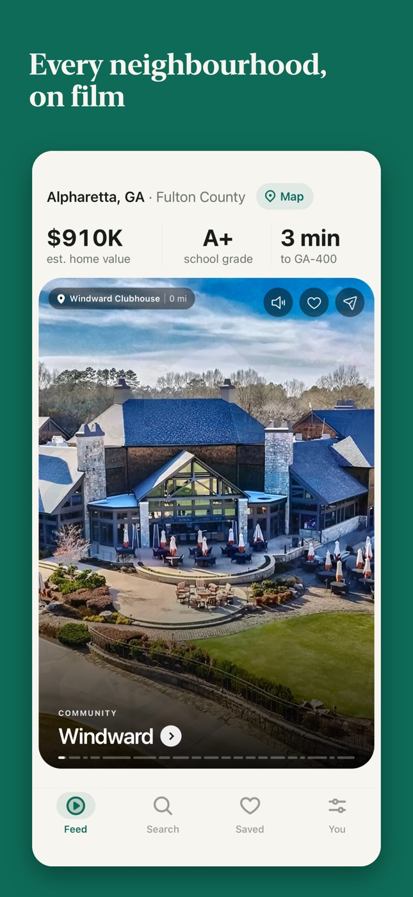
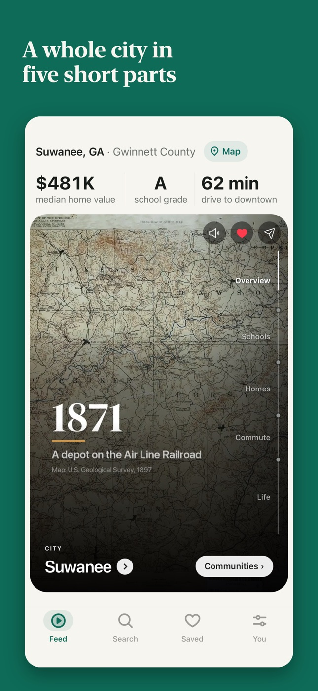
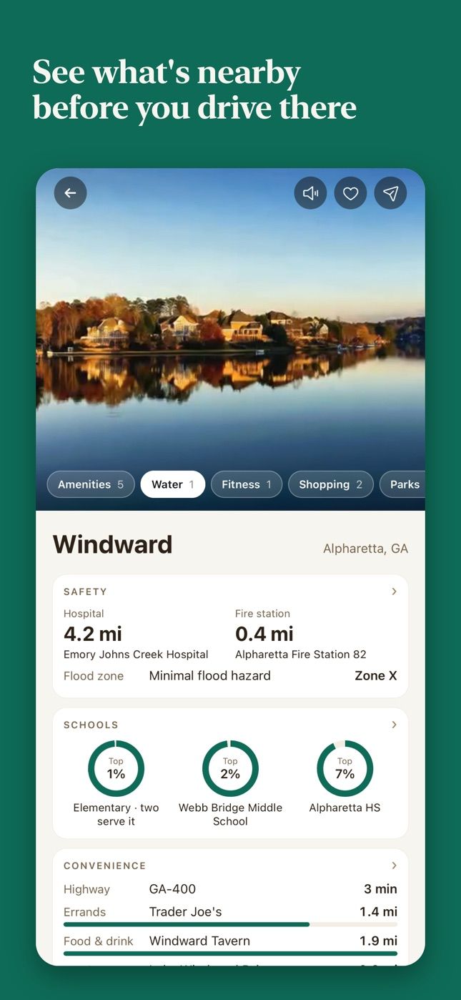
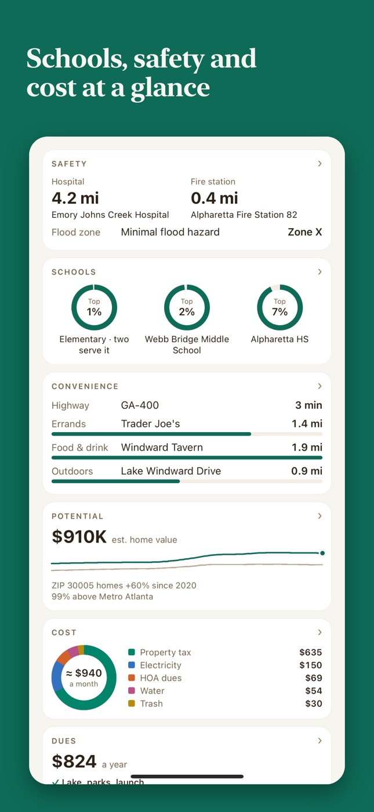
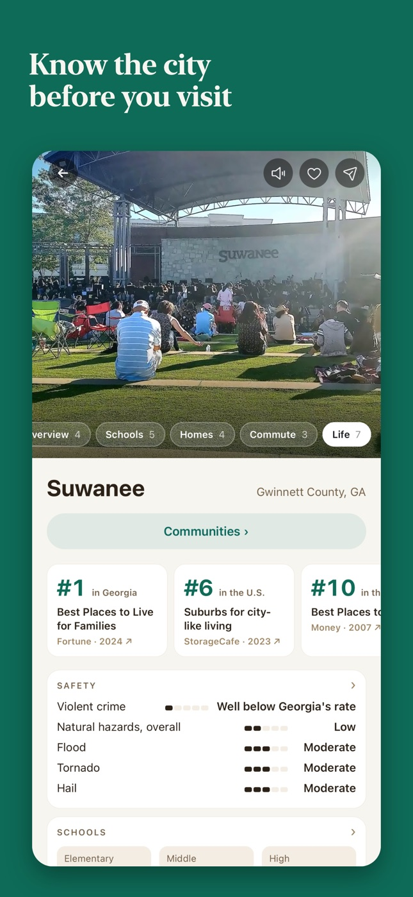
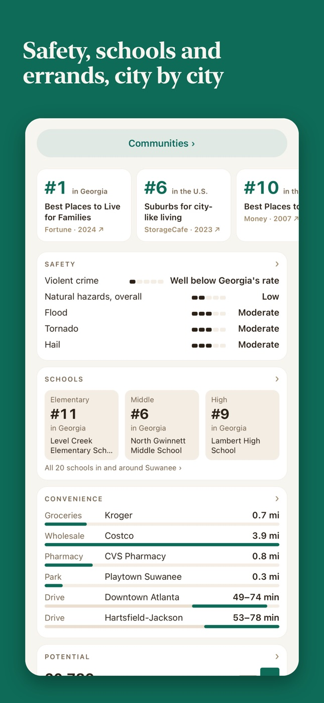
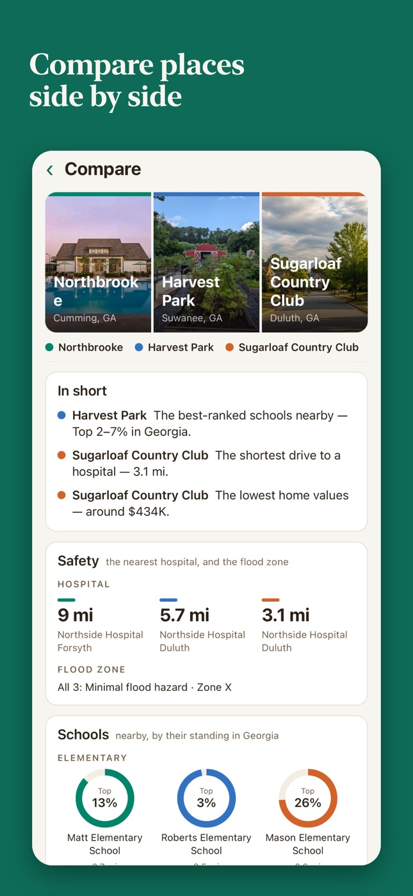
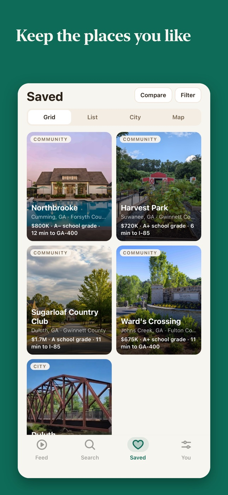
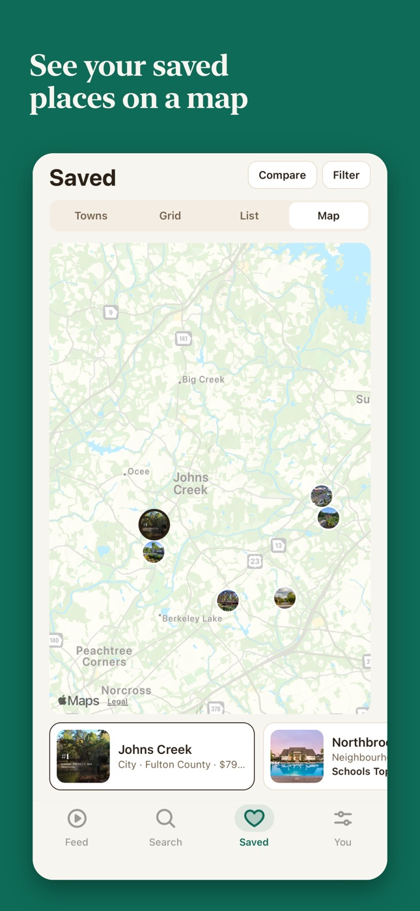

Nine screenshots in the order the App Store shows them, from your captures. The status bar is cropped off; everything else is the app as it is. Swipe sideways. Tap one to see it full size.
7 and 9 come from the older build. 9 shows the old Saved switch (Towns instead of City) and the old line under each place — drop it or send a new one from the map.
Reply with what to change — a caption, the order, a screenshot to drop — or "OK" to upload them. Uploading means taking 1.1.1 out of the review queue for a minute and sending it back.








